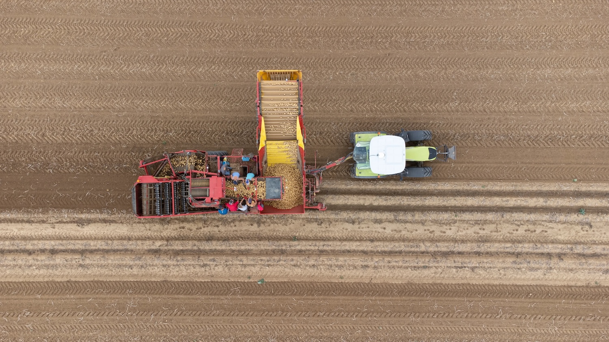
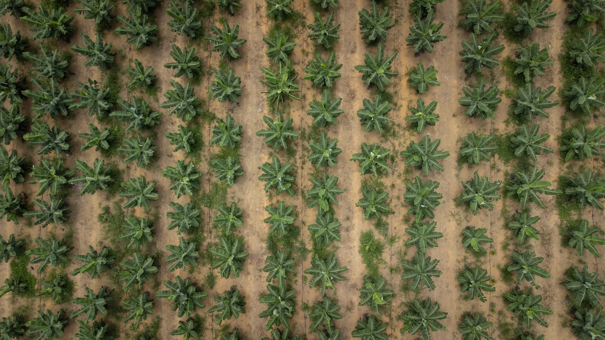
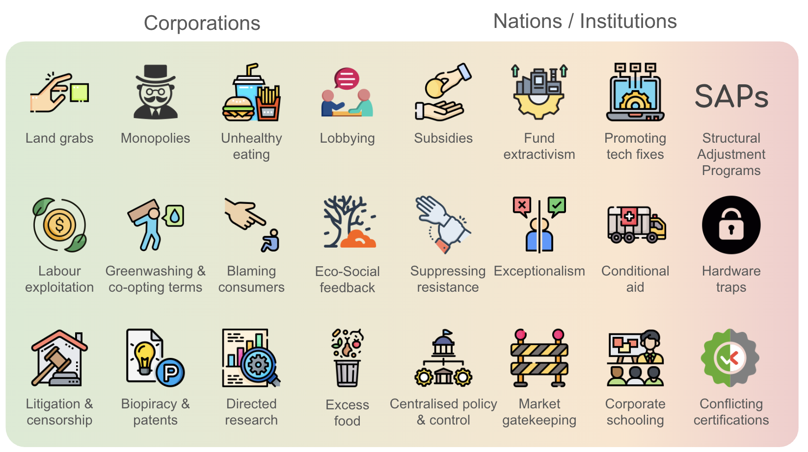

Tomatoes lie rotting in a field next to a greenhouse—discarded because irrigation costs rose too high
The global food system is often sold to us as a triumph of modern efficiency. We’re told that industrial farming and global trade are the only ways to feed a growing population. But if the system is so efficient, why do hundreds of millions of people still go hungry while record amounts of food are wasted?
To find the answer, we have to look at the power dynamics of food imperialism.
An extended version of this essay was first published by The New Climate in December 2024
Shipping containers wait to be loaded onto cargo ships at Gothenburg’s port
In simple terms, food imperialism is a system where wealthy nations and massive corporations control the land, labour, and resources of poorer countries.
While the era of traditional empires might seem like history, the structures they built are still very much alive. Today, instead of direct colonial rule, control is maintained through unfair trade deals, debt, and a global market that treats food as a financial investment rather than a human right.

Farm workers in France sort potatoes as they are harvested
The way we produce and trade food today is designed to move wealth from the Global South to the Global North. This happens in a few key ways:
A cargo ship being loaded up at Gothenburg port
This isn't just about economics; it’s about health and the environment. As traditional, diverse diets are replaced by cheap, ultra-processed imports, many communities face a "double burden" of malnutrition—suffering from both hunger and rising rates of diet-related illnesses like diabetes.
Environmentally, the drive for "cheap" food leads to massive deforestation and soil exhaustion. These ecological costs are effectively outsourced to the poorest parts of the world so that supermarket prices in the West stay artificially low.
To help identify how these power dynamics work in practice, we can use a framework called The Food Imperialist’s Playbook. This is a vital tool for spotting the specific 'plays' used to gain control over other societies through their food systems.

A banana plantation monocrop in Bahia state, Brazil
Understanding food imperialism can sometimes feel overwhelming because the tactics are often hidden behind complex trade jargon or economic policies. The Playbook simplifies this by breaking down the strategies used to create dependency.
Think of it as a set of recurring patterns—specific moves designed to shift power away from local communities and into the hands of global monopolies. By using this framework, we can see that what looks like a series of disconnected market trends is actually a co-ordinated system of control.

The Food Imperialist’s Playbook illustrates how specific "plays"—from seed monopolies to market dumping—work together to dismantle local food sovereignty and create global dependency. This framework helps us identify the systemic patterns used to control societies through their dinner plates.
Focus: The high-level institutional mechanisms that force nations into the imperialist system
Focus: The physical and economic "taking" from the Global Majority.
Focus: The "invisible" plays that control the future of agriculture through tech and law.
Focus: Managing dissent and perception to protect the status quo.
Using the Playbook allows us to look at a new trade deal, a seed patent law, or a massive land purchase and ask: Which play is being made here? It is useful for several reasons:
By learning to recognise these plays, we can move from being passive consumers to informed advocates, helping to challenge a system that continues to prize corporate expansion over human dignity.
Tomatoes lie rotting in a field next to a greenhouse—discarded because irrigation costs rose too high
The solution isn't just sending more food aid, which often just supports the corporations that created the problem. Instead, we need to support food sovereignty: the right of people to define their own food and agriculture systems.
This means breaking up corporate monopolies, ending trade rules that penalise small-scale farmers, and prioritising feeding people over producing biofuels or cheap livestock feed.
Building a fairer system starts with acknowledging that the current crisis isn't a lack of food—it’s a lack of justice. By dismantling these imperialist structures, we can create a world where everyone has a seat at the table.

A migrant labourer house (a chabola) outside a greenhouse in Almería—the utlimate result of food imperialism